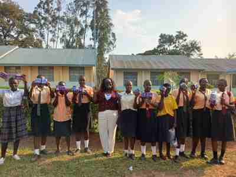

Legal Status
Officially recognized in Tanzania under the Non-Governmental Organizations Act, 2002, on 25 August 2021.
A purpose-driven international NGO working across East Africa to promote sustainable, inclusive and community-centered development.
BIS Inc Foundation is an International Non-Governmental Organization legally incorporated and registered in Florida, United States of America. The organization expanded operations to East Africa through a registered branch in Tanzania.
Officially recognized in Tanzania under the Non-Governmental Organizations Act, 2002, on 25 August 2021.
Registration number: I-NGO/2208.
The Tanzanian headquarters are in Arusha, serving activities across Tanzania Mainland.
We implement impactful programs in health, education, youth empowerment and community resilience through practical, data-driven, community-centered and culturally relevant interventions.
Improving access to healthcare, public health education and health-system capacity, including maternal and child health and disease awareness.
Supporting school infrastructure, learning materials and teacher training, with particular attention to vulnerable children and marginalized groups.
Building life skills, entrepreneurship, leadership and vocational skills to help young people participate meaningfully in their communities and economy.
Strengthening community capacity, livelihoods, local institutions and social cohesion in response to social, economic and environmental challenges.
Disability awareness campaigns, mobility and assistive devices for over 300 people, skills training and partnerships with rehabilitation centers.
Micro-grants supporting 120+ single mothers, parenting and financial-literacy workshops, childcare support and advocacy.
Job fairs, mentorship, practical skills training for over 500 youths and business startup support.
Entrepreneurship bootcamps, business development services, legal guidance, monthly business forums and community cooperatives.
Campaigns on maternal health, HIV/AIDS and mental well-being, mobile clinics, sanitary kits and menstrual-health education.
School supplies and uniforms for over 200 underprivileged children annually, classroom improvements, tutoring and parent education.
